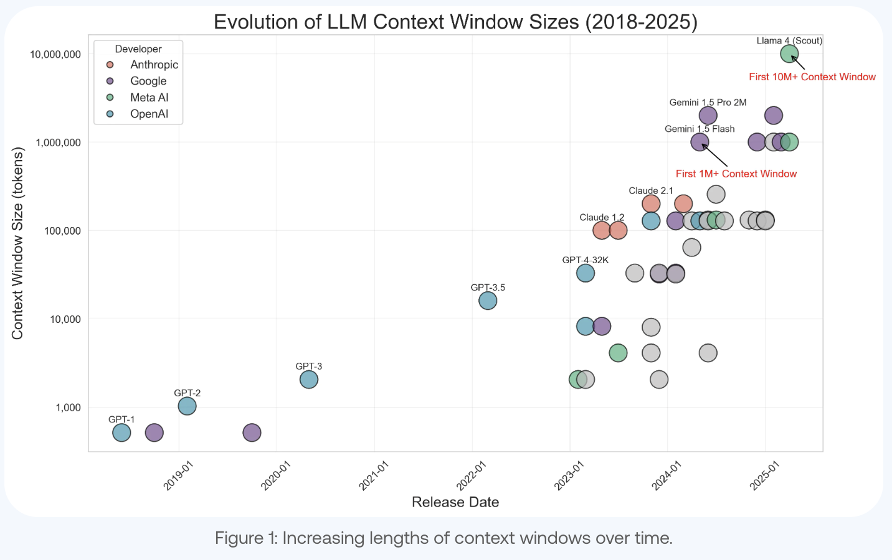

The Intelligence of Forgetting
April 10th, 2026
I first ran into the contrast between memory and learning in a podcast featuring Andrej Karpathy, and it has stuck with me ever since. Here’s an excerpt from the conversation.
“The best learners we know of, children, are extremely bad at recollecting information. In the earliest stages of childhood you forget almost everything… But you’re extremely good at picking up new languages and learning from the world… At the opposite end of the spectrum, LLM pre-training produces models that can regurgitate the next words of a Wikipedia page almost verbatim, yet their ability to learn abstract concepts quickly, the way a child can, is much more limited.”
Source: podcast (YouTube)
This strange pattern is common in nature. In the classic comparative cognition demonstration where chimps briefly see scattered numerals and must touch them in order after the digits vanish, performance can exceed typical human limits on that narrow task.
The lesson is not that chimps are uniformly smarter, but that spectacular recall on a constrained benchmark is compatible with a very different cognitive package from the one we use for open-ended reasoning. Cognitive science has long treated memory and problem solving as partners with tension, as limited working memory forces chunking and abstraction. Frictionless ability to recall is not always the path to durable understanding. The right question is not whether memory should be minimized (it clearly should not be), but what optimal memory is for a system that must generalize under noise and time pressure.
My own work with AI coding assistants, at Arista Networks and with UBC Uncrewed Aircraft Systems, has made this feel less abstract. Models can exhibit a high degree of precision in memory for material that looks like training data: for example, reproducing floating-point values like those in camera intrinsics after I supplied them.
CAMERA_INTRINSICS = {
'fx': 643.2360229492188,
'fy': 642.1893920898438,
'ppx': 661.8545532226562,
'ppy': 365.9696044921875,
}The machinery is uncannily good at exact regurgitation.
Yet over long agentic sessions for AI-augmented workflows, say twenty minutes to an hour of full autonomous tool use and planning, I have seen the opposite failure: a general-purpose agent can drop a clearly specified step in a workflow, even when clearly instructed to follow a process. This is what Andrej Karpathy has called jagged intelligence: towering peaks beside surprising valleys. Shyam Sankar’s essay on that idea is a useful reminder that average benchmark scores are misleading when you are building a production workflow.
Humans are jagged too, but the valleys are different. I may be unable to recall what I ate for lunch three days ago, but I can still summon the emotional texture of some moments in my life with uncomfortable clarity. That asymmetry is not a bug. Biological memory is selective: it prioritizes what mattered for goals, identity, and survival. We consolidate and distort on purpose. AI models, by contrast, interpolate statistics and context-window state without a human-like emotional salience ladder.
That framing poses a contrarian take on a fast-approaching futurist scenario: if we had instant, perfect external recall, a Neuralink-grade lookup layer, would we become smarter? The optimistic story, and what feels intuitive to me, is an intelligence explosion: humans keep judgment and creativity, and frictionless memory supplies facts. The pessimistic story is subtler: thinking is also a muscle. Recent experimental evidence fits the worry. In Shen and Tamkin’s How AI Impacts Skill Formation (arXiv:2601.20245), developers learning a new asynchronous library with heavy AI delegation showed impaired conceptual understanding, code reading, and debugging, without reliable net efficiency gains; some interaction patterns that preserved cognitive engagement did better. The analogy is not perfect, but the shape of the concern is: when access is too easy, the struggle that forges competence thins out. That resonates with how many engineers feel about coding when autocomplete and agents remove the friction of typing and searching; their skills can feel both amplified and at risk.
Public figures are already acting out the tension behind a Neuralink-grade lookup layer. A discussion of Alexandr Wang’s remarks about waiting to have a child until the augmentation picture stabilizes is one concrete example of the fear that unaugmented children could be left behind. We want leverage without hollowing out the capacities we need to supervise powerful tools.
Parallel trends in AI make the same tension visible at the systems level. Context windows have grown from hundreds of tokens toward millions. That enables whole documents, marathon conversations, and cache-augmented prompts. It does not erase tradeoffs: attention is uneven across length; noise and cost rise. I’ve noticed an entropic feature of longer context windows, in which initial instructions can get ignored or wrongly executed.

Source: Understanding the Impact of Increasing LLM Context Windows (Meibel)
Children calibrating their senses, chimps on a specialized task, engineers using copilots, and trillion-parameter models all illustrate different slices of the memory vs. reasoning puzzle. The design challenge for biological augmentation, education, and model architecture is to keep enough memory to be grounded, but not so much that surface statistics crowd out the habits of thought that still matter when the recall fails, the context drifts, or the last step of the workflow quietly disappears.